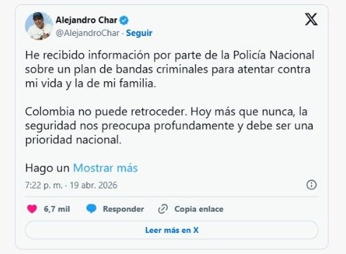
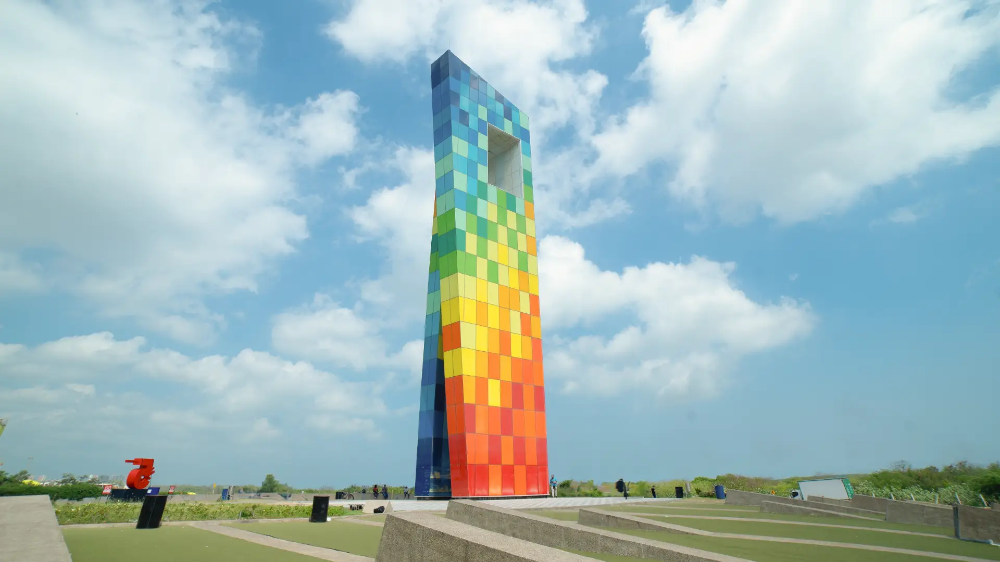
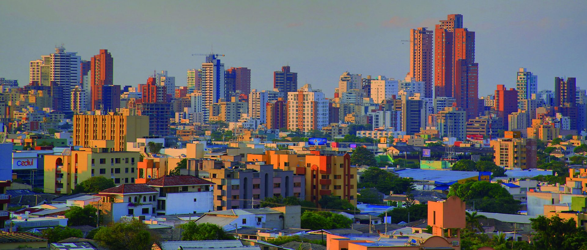

Denuncian plan para atentar contra el alcalde de Barranquilla
El alcalde de Barranquilla, Alejandro Char, encendió las alertas tras denunciar un presunto plan para atentar contra su vida y la de su familia. Según información entregada por la Policía, detrás de la amenaza estarían bandas criminales que operan en la ciudad.

Aumento de feminicidios preocupa a las autoridades
En el Atlántico, especialmente en Barranquilla, se han registrado al menos 19 asesinatos de mujeres en lo que va de 2026, lo que ha encendido las alertas de organizaciones sociales y defensoras de derechos humanos.

Capturan red de extorsión que afectaba varios barrios
Autoridades capturaron a siete personas, incluido un menor de edad, señalados de extorsionar a habitantes de al menos cinco barrios de la ciudad.
